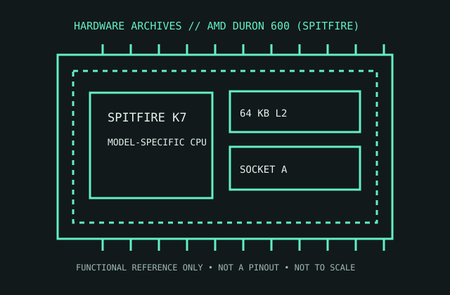

[ AMD GENERATIONS // IDENTIFIED PROCESSOR ]
AMD Duron 600 (Spitfire)
The 600 MHz Spitfire Duron is an early Socket A budget processor with a compact on-die L2 cache and Athlon-derived K7 architecture.

MODEL IDENTIFICATION: AMD Duron 600 (Spitfire). Compare the printed part number, speed grade, package, cache configuration, and stepping with the cited documentation; do not transfer one variant’s limits to another.
Recorded specifications
| Cataloged part | AMD Duron 600 (Spitfire) |
|---|---|
| Era / family | AMD Duron / Spitfire, 2000; 600 MHz model. |
| Key specifications | 600 MHz core; 100 MHz DDR front-side bus (200 MT/s); 128 KB L1 (64 KB instruction + 64 KB data); 64 KB on-die L2; Socket A / Socket 462; 0.18 μm. |
| Interface / fit | Requires Socket A motherboard support for the Spitfire core, 100 MHz clock/200 MT/s bus, and matching BIOS. Verify the board’s multiplier/voltage support; Socket A physical fit is not adequate evidence. |
| Variant distinction | Duron 600 Spitfire has 64 KB L2, unlike Thunderbird Athlon models with 256 KB L2. Later Morgan Durons support different features and thermal envelopes. |
Compatibility and variants
- Requires Socket A motherboard support for the Spitfire core, 100 MHz clock/200 MT/s bus, and matching BIOS. Verify the board’s multiplier/voltage support; Socket A physical fit is not adequate evidence.
- Duron 600 Spitfire has 64 KB L2, unlike Thunderbird Athlon models with 256 KB L2. Later Morgan Durons support different features and thermal envelopes.
- Confirm the system manufacturer’s exact processor support list, firmware minimum, board revision, power/thermal envelope, and memory requirements before installation.
Service and archival notes
Read the complete OPN and inspect the exposed die for chips or cracks. Retain cooler clip/mount and board settings; use a flat, appropriate heatsink and avoid lateral force on the die.
Preserve provenance and a record of the exact marking, condition, tested board/platform, firmware, cooling, memory configuration, and test conditions. Separate published specification limits from observations made on a particular surviving system.
Sources & further reading
- AMD Duron Processor Model 3 Data Sheet — Spitfire model electrical/package referenceSpecific model or manufacturer-family reference; verify revision and configuration against the device marking and platform documentation.
- AMD Duron 600 Spitfire model identification/specification cross-referenceSpecific model or manufacturer-family reference; verify revision and configuration against the device marking and platform documentation.
- AMD Duron launch/family history referenceSpecific model or manufacturer-family reference; verify revision and configuration against the device marking and platform documentation.
Third-party reference pages and document archives are finding aids. The matching manufacturer datasheet, product specification, and board support documentation take precedence for the exact revision and host.